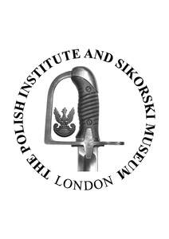

Trade Mark Journal No.2025/047 21 November 2025
UK00004284469 27 October 2025 (6,9,14,16,17,18,19,20,21,24,25,26,35,36,41)

- Class 6
- Memorial plaques of metal; monuments and memorials made primarily of non-precious metal; monuments of common metal; monuments of metal; monuments of non-precious metal; monuments of metal for tombs; monuments of bronze for tombs.
- Class 9
- Databases; electronic databases; media content; recorded content; video recordings; audio recordings; downloadable videos; downloadable audio files; downloadable publications; downloadable image files; downloadable media; recorded and downloadable media; fridge magnets; mobile apps; magnetic badges.
- Class 14
- Decorative pins [jewellery]; decorative pins of precious metal; ornamental pins; ornamental pins of precious metal; pins [jewellery]; cloisonne pins; lapel pins; ornamental lapel pins; lapel pins [jewellery]; lapel pins of precious metals [jewellery]; decorative pins [jewellery]; jewellery hat pins; ornamental hat pins.
- Class 16
- Printed matter; printed publications; publications; books; pamphlets and brochures; newsletters; booklets; leaflets; flyers; instructional and teaching materials; printed promotional material; posters; signs of paper or cardboard; tickets; postcards; stationery and office requisites, except furniture; pens; pencils; stickers; calendars; notebooks; diaries; bookmarks; photographs; archival storage pages; paper badges; cardboard badges; paper name badges; name badges [office requisites].
- Class 17
- Decorative articles [badges] made of mica; decorative articles [badges] made of rubber.
- Class 18
- Bags; tote bags; canvas bags; souvenir bags; umbrellas.
- Class 19
- Memorial stones; memorials of stone; memorials of marble; memorials of granite; memorial plaques of stone; memorial plaques, not of metal; monuments and memorials, not of metal; monuments of stone; monument stone; monuments of concrete; monuments of marble; tombs [monuments], not of metal; non-metal monuments.
- Class 20
- Plastic name badges.
- Class 21
- Mugs; bottles; water bottles.
- Class 24
- Badges made of fabric material.
- Class 25
- Clothing; t-shirts; tops [clothing]; polo shirts; shirts; jerseys [clothing]; hoodies; jumpers; shorts; trousers; skirts; socks; ties; headwear; headgear; caps; waterproof clothing; jackets [clothing]; outdoor clothing; wristbands; footwear.
- Class 26
- Badges for wear, not of precious metal; embroidered badges; pinback buttons; button badges; ornamental novelty badges; ornamental novelty badges [buttons]; novelty buttons [badges] for wear; pins; hat pins, other than jewellery; pins, other than jewellery.
- Class 35
- Promotion of charitable fundraising events; arranging and conducting promotional events; promotional and public awareness campaigns.
- Class 36
- Charitable fundraising; charitable collections; fundraising services; arranging charitable fundraising events; charitable fundraising by means of entertainment events; memorial fundraising.
- Class 41
- Museums; museum services; running of museums; museum curator services; providing museum facilities; providing museum facilities and services; museum exhibitions; presenting museum exhibitions; museum facilities (providing -) [presentation, exhibitions]; exhibitions (conducting -) for cultural purposes; organisation of exhibitions for cultural and educational purposes; arranging of exhibitions for cultural purposes; arranging of presentations for cultural purposes; arranging of conventions for cultural purposes; arranging of exhibitions for cultural or educational purposes; arranging of displays for cultural and educational purposes; organisation of tours for cultural and educational purposes; conducting guided tours of cultural sites for educational purposes; workshops for cultural purposes; education; providing of training; archive library services; organisation of guided educational tours; conducting of guided educational tours; conducting guided tours of cultural sites for educational purposes; providing online virtual guided tours; arranging and conducting workshops; arranging and conducting of workshops and seminars; conducting courses, seminars and workshops; workshops for educational purposes; workshops for recreational purposes; workshops for cultural purposes; cultural services; cultural activities; organisation of cultural events; arranging and conducting of cultural and educational events; conducting of cultural activities; organising events for cultural purposes; information relating to cultural activities; providing information relating to cultural and educational activities; providing information about cultural activities; organising cultural and arts events; arranging and conducting of cultural activities; arranging and conducting of cultural and educational activities; organisation of shows for cultural purposes; arranging of seminars relating to cultural activities; providing online videos (not downloadable); providing online audio files (not downloadable); providing online publications (not downloadable).
THE POLISH INSTITUTE AND SIKORSKI MUSEUM
Representative: Russell-Cooke LLP